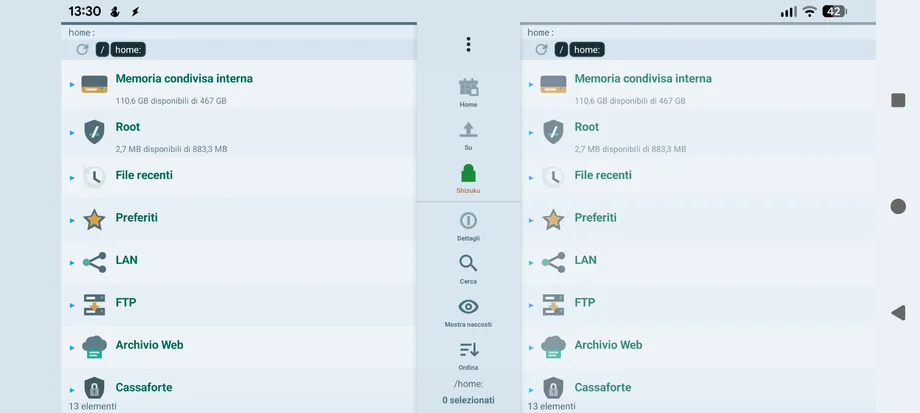
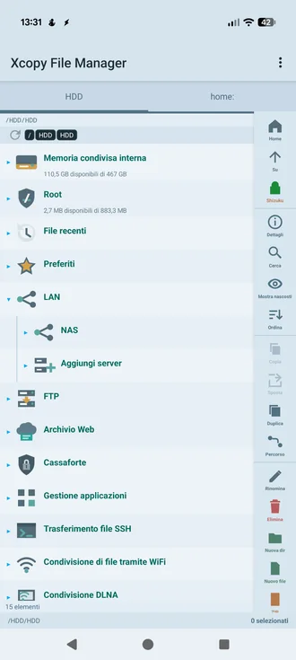
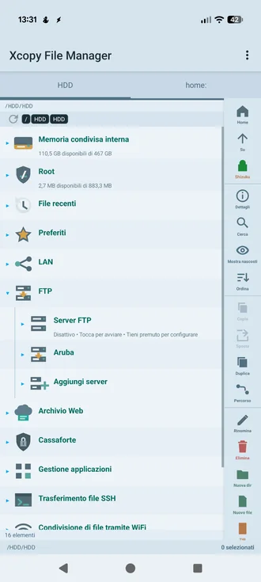
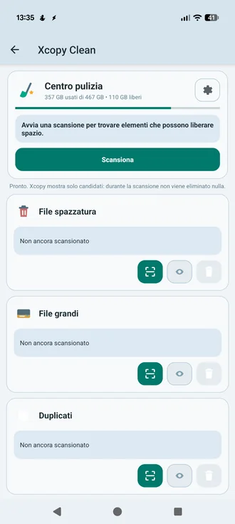
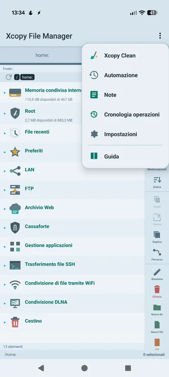

Xcopy
File Manager
File locali, USB, NAS, FTP, SFTP/SSH, WebDAV e Google Drive in un vero ambiente a doppio pannello, con Time Machine, Xcopy Clean, automazioni, cassaforti e strumenti professionali.
Local files, USB, NAS, FTP, SFTP/SSH, WebDAV and Google Drive in a true dual-panel workspace, with Time Machine, Xcopy Clean, automation, vaults and professional tools.

Tutto quello che serve, senza confondere
Everything you need, without the clutter
Le funzioni principali sono divise per area, con lo stesso linguaggio visivo dell'app.
Core capabilities are divided into clear areas, using the same visual language as the app.
File Manager
Doppio pannello, tree indipendenti, copia, sposta, rinomina, duplica, ricerca, ordinamento, preferiti, recenti e USB.
Dual panel, independent trees, copy, move, rename, duplicate, search, sorting, favorites, recent files and USB.
Rete & Cloud
Network & Cloud
SMB/NAS, FTP, SFTP/SSH, WebDAV e Google Drive integrati nello stesso tree.
SMB/NAS, FTP, SFTP/SSH, WebDAV and Google Drive integrated into the same tree.
Sicurezza
Security
Cassaforti cifrate, biometria, credenziali protette e backup impostazioni cifrato.
Encrypted vaults, biometrics, protected credentials and encrypted settings backup.
Time Machine
Versioni, esclusioni e ripristino per proteggere le cartelle importanti.
Versions, exclusions and restore workflows for important folders.
Xcopy Clean
Spazzatura, file grandi, duplicati reali, foto/video/audio duplicati o simili.
Junk, large files, true duplicates and duplicate/similar photo, video and audio workflows.
Automazioni
Automation
Operazioni programmate e in background sulle posizioni supportate.
Scheduled and background workflows across supported locations.
Il doppio pannello è il centro di tutto
The dual panel is the center of everything
Sorgente e destinazione restano sempre pronte. Ogni pannello salva percorso, ordine e visibilità dei nodi in modo indipendente.
Source and destination stay ready. Each panel independently remembers path, node order and visibility.
Gli archivi remoti si comportano come dischi
Remote storage behaves like another disk
Le connessioni salvate compaiono nel tree e si aprono con la stessa logica delle memorie locali.
Saved connections live in the tree and open with the same logic as local storage.


Più livelli di sicurezza, non un solo dialog
Several layers of protection, not a single dialog
Xcopy combina cronologia, Annulla, Cestino, Time Machine e Cassaforti per ridurre le perdite accidentali.
Xcopy combines history, Undo, Trash, Time Machine and Vaults to reduce accidental data loss.
Cronologia + Annulla
History + Undo
Cestino
Trash
Cassaforti cifrate
Encrypted vaults
Recupero versionato per le cartelle importanti
Versioned recovery for important folders
Configura cosa proteggere, cosa escludere e ripristina versioni precedenti quando disponibili.
Choose what to protect, what to exclude and restore earlier versions when available.
Time Machine
Scansiona prima. Decidi dopo.
Scan first. Decide later.
La scansione non elimina nulla: mostra candidati e risultati verificati, poi sei tu a scegliere.
Scanning deletes nothing: it shows verified candidates and results, then you choose.

Apri, analizza e modifica senza uscire da Xcopy
Open, inspect and edit without leaving Xcopy
Gestore archivi
Archive manager
ZIP, RAR e archivi anche remoti dove supportato.
ZIP, RAR and remote archives where supported.
SQLite / MDB
Explorer ed editor database.
Database explorer and editor.
PDF Viewer / Editor
Visualizzazione e modifica PDF.
PDF viewing and editing.
HEX Viewer / Editor
Analisi a basso livello dei file.
Low-level file inspection.
EXIF Editor
Metadati foto.
Photo metadata.
Checksum avanzato
Advanced checksum
Calcolo e verifica hash.
Hash calculation and verification.
APK Analyzer
Analisi APK e pacchetti installati.
APK and installed package analysis.
Automazioni
Automation
Flussi programmati e background.
Scheduled and background workflows.
Gli strumenti sono sempre a portata di mano
Tools are always within reach
Xcopy Clean, Automazioni, Note, Cronologia operazioni, Impostazioni e Guida sono raccolti nel menu principale.
Xcopy Clean, Automation, Notes, Operation history, Settings and Guide are available from the main menu.

La stessa guida dell'app, anche sul web
The same app guide, now on the web
Con struttura, schede, note e articoli correlati nello stesso stile visivo di Xcopy.
With the same cards, notes, structure and related articles visual language as Xcopy.